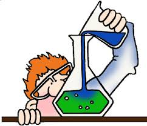
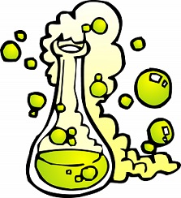

Proprietăți fizice
Punctele de topire si fierbere ale alcanilor cresc odata cu cresterea numarului de atomi de carbon. Ramificarea determina micsorarea punctului de fierbere. Alcanii de la C1 pâna la C4 sunt gazosi, cei de la C4 pâna la C15 sunt lichizi iar alcanii superiori sunt solizi. Deoarece alcanii gazosi nu au miros, pentru depistarea scaparilor de gaze din conducte si de la aragaz se folosesc compusi cu miros respingator, de avertizare, numiti mercaptani.
Proprietăți chimice
Denumirea de parafine provine de la “parum affinis”- afinitate (chimica) mica, adica au reactivitate chimica scazuta. Reactiile chimice la care participa alcanii se grupeaza dupa natura legaturilor covalente care se desfac(legaturile C-H se desfac la substitutie, dehidrogenare, oxidare; legaturile C-C se desfac la descompunere termica, izomerizare, ardere).
Reacții
- Reactiile de substitutie
Halogenarea: => derivati halogenati R-H + X2 => R-X + HX - Reactiile de izomerizare au loc la temperatura de 50 - 100°C sub actiunea unor catalizatori ca bromura sau clorura de aluminiu anhidra. Aceasta reactie a fost descoperita de chimistul român C.D. Nenitescu.
- Reactiile de oxidare sunt reactiile care au loc în prezenta oxigenului. Acestea pot fi: oxidari incomplete si oxidari totale (arderi).
Oxidari incomplete ale metanului:
CH4 + 1/2O2 => CH3OH (metanol) la 60 atm si 400°C
CH4 + O2 => CH2O (aldehida formica) + H2O catalizatori oxizi de azot, 400-600°C
2CH4 + O2 => 2CO + 4H2(gaz de sinteza)
Arderi: Oxidarea totala a alcanilor conduce la formarea dioxidului de carbon si a apei, cu degajare de caldura. Aceasta explica folosirea unor alcani ca si combustibili.
CH4 + 2O2 => CO2 + 2H2O + Q(caldura) - Descompunerea termica a alcanilor
Alcanii prezinta stabilitate termica ridicata (la temperaturi mai mici are loc cracarea acestora,iar la temperaturi mai mari de de 650°C are loc dehidrogenarea).
Cracare
CH3-CH2-CH2-CH3 => CH4 (metan) + CH2-CH-CH3 (propena)
=> CH3-CH3 (etan) + CH2-CH2 (etena)
Dehidrogenare
CH3-CH2-CH2-CH3 => CH2-CH-CH2-CH3 (1-butena)+ H2
=> CH3-CH-CH-CH3 (2-butena)+ H2
 